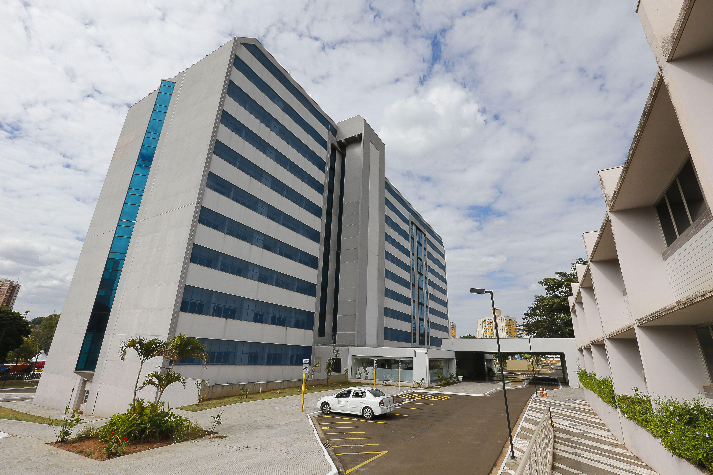

A metodologia didático-pedagógica prioriza uma formação técnico-científica de excelência, ressaltando a importância da inovação, da interdisciplinaridade, do uso de novas tecnologias da informação e comunicação (TICs) e de metodologias ativas, articulada à formação de cidadãos éticos, com uma visão abrangente e pluralista.
O principal diferencial da Universidade Ciência Saúde é a possibilidade do aluno enriquecer o aprendizado tendo uma intensa e completa vivência prática. Algo que só o maior complexo hospitalar de Minas pode proporcionar.
A Universidade Ciência Saúde foi avaliada com nota 5* pelo Ministério da Educação (MEC). Desta forma, a nova unidade passa a oferecer ensino superior com a mesma qualidade e excelência dos cursos de lato sensu e stricto sensu.
*Avaliação feita em 2023. Nota máxima 5.